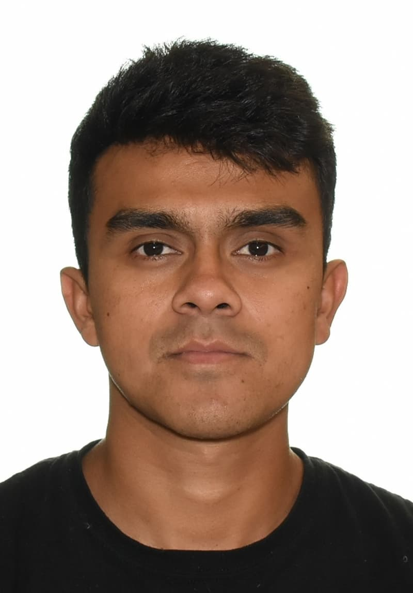

Rony Reyes | WDD 130
Hello! My name is Rony Reyes, and I’m 27 years old. I was born and raised in Guatemala, a country full of vibrant , stunning landscapes, and warm, welcoming people. Growing up in a large family with six siblings taught me the importance of teamwork, sharing, and supporting each other. While one of my brothers now lives in Brazil, the rest of my family is still back home in Guatemala, and I cherish every opportunity to stay connected with them despite the distance. I currently live in Canada, where I have embraced new experiences and opportunities. I got married last year in July, which has been one of the happiest and most transformative milestones in my life. Building a life together with my spouse has taught me patience, love, and the value of creating meaningful memories every day. Staying active and enjoying sports has always been a big part of my life. I love playing soccer and am part of a local team, which gives me the chance to stay fit while building friendships and teamwork skills. I also love swimming, surfing, and biking. I have a fun trick where I can ride a bike without using my hands!